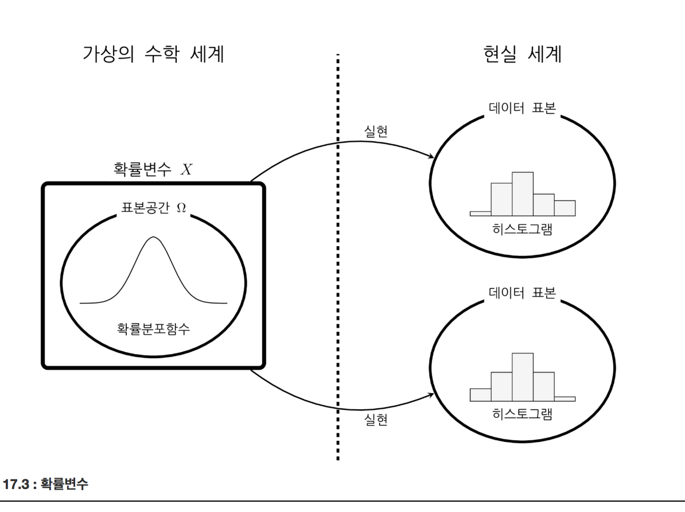

확률적 데이터와 기술통계 & 데이터 모형과 확률변수
Summary
- 결정론적 데이터는 항상 같은 값이 나오는 데이터이고 확률적데이터는 예측할 수 없는 값이 나오는 데이터이다.
- 분포는 확률적 데이터에서 어떠한 값이 자주 나오고 드물게 나오는가를 나타내는 특성이다.
- 표본평균은 데이터의 평균이다. 데이터의 분포의 대략적인 위치를 나타낸다.
- 표본분산(sample variance) 또는 표본표준편차(sample standard deviation)는 데이터가 얼마나 변동(variation) 하고 있는지 알려준다.
- 표본분산을 만들 때 표본 총 개수 n이 아니라 n-1로 나눠주는 이유는 표본분산을 계산할 때 사용하는 표본평균이 데이터가 몰린 쪽으로 편향되게 나옵니다. 계산한 표본분산이 모분산보다 작게 나올 수 있어서 n-1로 나누어 표본분산을 크게 해주기 위해서이다.
- 확률변수는 확률이 정의된 표본공간의 모든 표본을 실수인 숫자로 바꿔주는 함수이다.
- 확률변수로부터 데이터를 여러번 생성하는 경우 실제 데이터 값은 매번 달라질 수 있지만 확률 모형 자체는 변하지 않는다. 확률변수의 확률분포함수는 우리가 직접 관찰할 수 없다. 다만 확률변수에서 만들어지는 실제 데이터 값을 이용하여 확률분포함수가 이러한 것일 거라고 추정할 뿐이다.확률변수에서 만들어 지는 실제 데이터의 값은 확률변수가 가진 특성을 반영하고 있다. 데이터의 갯수가 적을수록 확률변수가 가진 특징을 정확하게 표현하지 못하지만 데이터의 갯수가 증가하면 보다 정확하게 확률분포함수를 묘사할 수 있게 된다.
빈도주의적 관점(데이터 자체의 값이 어떤 특성을 가지는지 표현하기 위한 수단)에서 데이터 자체의 값을 확률로 표현하는 방법에 대해 공부해보자
확률적 데이터
결정론적 데이터(deterministic data) 는 항상 같은 값이 나오는 데이터이다.
확률적 데이터(random data, probabilistic data, stochasic data) 는 예측할 수 없는 값이 나오는 데이터이다.
분포와 기술통계
분포(distribution) 는 확률적 데이터에서 어떠한 값이 자주 나오고 어떠한 값이 드물게 나오는가를 나타내는 특성이다. 흔히 히스토그램(histogram) 사용하여 표현한다.
기술통계(descriptive) 는 어떤 숫자를 계산하여 그 숫자로서 분포를 표현하는 값이다.
- 표본평균, 표본중앙값, 표본최빈값
- 표본분산, 표본표준편차
- 표본왜도, 표본첨도
표본평균
표본평균(sample mean, sample average)은 데이터의 평균이다. 데이터의 분포의 대략적인 위치를 나타낸다
N은 자료의 갯수, i는 자료의 순서(index)를 뜻한다.
표본중앙값
표본중앙값(sample median)은 전체 자료를 크기별로 정렬하였을 때 가장 중앙에 위치하게 되는 값이다.
전체 표본의 갯수가 N인 경우, N이 홀수이면중앙값은 (n+1)/2 번째 표본의 값이고 N이 짝수이면 중앙값은 n/2 번째 표본의 값과 n/2+1 번째 표본의 값의 평균이다. 예를 들면 예를 들어 99명의 사람의 최고혈압을 측정한 데이터가 가장 낮은 값부터 가장 높은 값까지 순서대로 정렬하였을 때 50번째 사람의 최고혈압이 이 데이터의 샘풀중앙값이 된다. 사람의 수가 100명이라면 50번째 데이터와 51번째 데이터의 평균값을 사용한다.
표본최빈값
표본최빈값(most frequent value, sample mode)은 데이터의 값 중 가장 빈번하게 나오는 값이다.
파이썬을 사용한 대표값 계산
Numpy 함수를 사용하여 각종 대표값 계산
mean(): 표본평균 계산median(): 표본중앙값 계산argmax(): 이산데이터의 표본최빈값 계산histogram(): 데이터를 구간으로 나누어 각 구간에 들어가는 데이터 갯수 계산
np.random.seed(0)
x = np.random.normal(size=21)
#표본평균, 표본중앙값
print("표본평균 = {}, 표본중앙값 = {}".format(np.mean(x), np.median(x)))
#최빈값, 최빈구간
m = x[np.argmax(x)]
ns, _ = np.histogram(x, bins=bins)
m_bin = np.argmax(ns)
print("최빈값 = {}, 최빈구간 = {}~{}".format(m, bins[m_bin], bins[m_bin+1]))
대칭분포와 단봉분포
표본평균, 표본중앙값, 표본최빈값은 분포의 모양에 따라 다음과 같은 특성을 보인다.
분포가 표본평균을 기준으로 대칭인 대칭(symmetric) 분포이면 표본중앙값은 표본평균과 같다.(mode(최빈값)은 같을수도 다를수도 있다.) 분포가 대칭분포이면서 하나의 최고값만을 가지는 단봉(uni-modal) 분포이면 표본최빈값은 표본평균과 같다. 대칭분포를 비대칭으로 만드는 데이터가 더해지면 표본평균이 가장 크게 영향을 받고 표본최빈값이 가장 적게 영향을 받는다.
분산과 표준편차
표본분산(sample variance) 또는 표본표준편차(sample standard deviation)는 데이터가 얼마나 변동(variation) 하고 있는지 알려준다. 분산의 폭(width) 을 대표하는 값이다.
표준편차는 분산에 대한 양의 제곱근(square root)값이다.
표본분산 식 (식에서 는 표본평균이다.)
위 식에서 구한 표본분산은 정확하기 말하면 편향오차를 가진 편향 표본분산(biased sample variance) 이다.
비편향 표본분산(unbiased sample variance) 식
표본분산을 만들 때 표본 총 개수 n이 아니라 n-1로 나눠주는 이유
표본분산을 계산할 때 사용하는 표본평균이 데이터가 몰린 쪽으로 편향되게 나옵니다. 계산한 표본분산이 모분산보다 작게 나올 수 있어서 n-1로 나누어 표본분산을 크게 해주기 위해서이다.
파이썬을 사용한 표본분산 및 표본표준편차의 계산
var() : 표본분산
std() : 표본표준편차
ddof : 비편향 표본분산과 표본표준편차를 구할 수 있다.
# 평균=0, 표준편차=2 인 정규분포 데이터 생성
sp.random.seed(0)
x = sp.stats.norm(0, 2).rvs(1000)
# 편향 표본분산, 표본표준편차
np.var(x), np.std(x)
# 비편향 표본분산, 표본표준편차
np.var(x, ddof=1), np.std(x, ddof=1)
표본비대칭도
표본비대칭도(sample skewness) 는 평균과의 거리의 세제곱을 이용하여 구한 특징값이다. 표본비대칭도가 0이면 분포가 대칭 이다.

표본첨도
표본첨도(sample kurtosis)는 평균과의 거리의 네제곱을 이용하여 구한 특징값이다. 데이터가 중앙에 몰려있는 정도를 정밀하게 비교하기 위해 쓰인다.
표본모멘트
표본모멘트(sample moment) 는 제곱을 이용하여 구한 모멘트를 차 표본모멘트라고 한다.
2차 표본모멘트 이상은 평균을 뺀 표본중앙모멘트(sample centered moment) 값을 사용하기도 한다.
확률적 데이터의 비교
데이터의 분포 는 데이터 집합에서 본질적인 정보를 나타낸다. 데이터 하나하나의 값이 다르더라도 두 데이터 집합의 분포가 같다면 같은 정보를 내포하고 있다 라고 본다.
기술통계값의 분포
표본평균과 같은 기술통계값은 표본집합이 달라지면 같이 달라지며 어떤 값이 나올지 예측할 수 없으므로 기술통계값 자체도 확률적 데이터이다. 데이터 분석에서는 데이터 자체의 분포 뿐 아니라 이 분포를 설명하는 기술통계값의 분포도 중요하다.
데이터 모형
데이터 모형(data model) 은 해당 데이터를 만들어내는 가상의 데이터 생성기이다.
데이터 모형이 갖추어야 할 조건은 해당 데이터와 분포(distribution)가 같은 데이터를 만들 수 있어야 한다. 데이터의 분포를 수학적으로 기술할 수 있고 알고리즘을 사용하여 데이터 표본을 구할 수 있어야 한다.
확률변수
데이터 모형의 가장 대표적인 예이다. 확률변수의 수학적 정의는 확률이 정의된 표본공간의 모든 표본을 실수인 숫자로 바꿔주는 함수다.
보통은 등의 대문자 알파벳을 사용하여 확률변수를 표기한다. 확률변수에 의해 할당된 실수는 와 같이 소문자 알파벳으로 표시한다. 경우에 따라서는 소문자 알파벳으로 확률변수를 표기하는 경우도 있다.
이산확률변수
이산확률변수(discrete random variable) 는 확률변수값이 연속적(continuous)이지 않고 떨어져(discrete) 있도록 정의할 수 있다.
연속확률변수
연속확률변수(continuous random variable)는 연속적이고 무한대의 실수 표본값을 가지는 확률변수이다.
확률변수와 데이터
확률변수를 실수인 데이터를 생성하는 주사위 같은 데이터생성기로 생각하면 된다. 다만 확률변수는 확률분포함수라는 간결하고 정확한 수학적 도구를 이용하여 확률이 정의되어 있다는 점 주의!!

데이터 모형에 따르면 우리가 가진 현실 세계의 데이터는 확률변수가 가진 확률분포에 따라 실수 표본공간에서 선택된 표본이다. 이렇게 확률분포함수에 따라 표본공간의 표본이 현실 세계의 데이터로 선택되는 것을 실현(realization) 혹은 표본화(sampling)라고 한다. 표본화는 다른 의미로도 사용되는데 많은 수의 데이터 집합에서 일부 데이터만 선택하는 과정도 표본화라고 한다.
따라서 확률변수와 실제 데이터는 다음과 같은 관계가 있다.
- 확률변수로부터 데이터를 여러번 생성하는 경우 실제 데이터 값은 매번 달라질 수 있지만 확률 모형 자체는 변하지 않는다.
- 확률변수의 확률분포함수는 우리가 직접 관찰할 수 없다. 다만 확률변수에서 만들어지는 실제 데이터 값을 이용하여 확률분포함수가 이러한 것일 거라고 추정할 뿐이다.
- 확률변수에서 만들어 지는 실제 데이터의 값은 확률변수가 가진 특성을 반영하고 있다. 데이터의 갯수가 적을수록 확률변수가 가진 특징을 정확하게 표현하지 못하지만 데이터의 갯수가 증가하면 보다 정확하게 확률분포함수를 묘사할 수 있게 된다.
확률변수를 사용한 데이터 분석
확률변수를 사용하게 되면 데이터 분석은 다음과 같은 순서로 이루어진다.
- 데이터를 확보한다.
- 확보된 데이터를 어떤 확률변수의 표본으로 가정한다.
- 데이터의 특성으로부터 확률변수의 특성을 추정한다.
- 구해진 확률변수의 특성으로 해당 확률분포함수의 모양을 결정하고 모수를 추정한다.
- 구해진 확률변수으로부터 다음에 생성될 데이터나 데이터 특성을 예측한다.